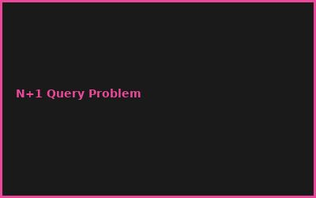
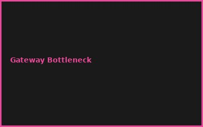

Kapitel 1: Federation Basics
- Apollo Federation Architecture
- Subgraph Composition
- Entity Resolution
- Federated Query Execution
Kapitel 2: Building Subgraphs
// Subgraph Service (Apollo Federation)
const typeDefs = gql`
extend schema
@link(url: "https://specs.apollo.dev/federation/v2.0")
type User @key(fields: "id") {
id: ID!
name: String!
}
`;
Kapitel 3: Reference Resolution
- __resolveReference Implementation
- Entity Graph Traversal
- Cross-Service Query Planning
- Query Optimization
Kapitel 4: Gateway Architecture
- Apollo Gateway Setup
- Service Mesh Integration
- Load Balancing
- Service Discovery
Kapitel 5: Performance & Caching
- Field-Level Caching
- APQ (Automatic Persisted Queries)
- Query Batching
- DataLoader for N+1 Prevention
Kapitel 6: Testing & Deployment
- Composition Testing
- Schema Validation
- Managed Federation (Apollo Studio)
- CI/CD Integration
💡 PRO-TIPPS
🎯 Tipp: DataLoader für N+1
Problem: Viele Queries = langsam | Lösung: DataLoader = batch loading
💰 BUDGET-HACKS (100% KOSTENLOS!)
💰 Hack: OpenSource Apollo Federation
Original: Apollo Studio Managed: €500+/Monat | Hack: Self-Hosted Apollo Gateway: €0 | Einsparnis: 100%
⚠️ FEHLER
❌ Fehler: Zirkuläre Abhängigkeiten
Was passiert: Infinite Query Loop | ✅ Lösung: Schema composition preview testen
🌐 COMMUNITY
Apollo Community, GraphQL Spec, Federation Working Group, GraphQL Conf
📸 Fehler-Galerie

